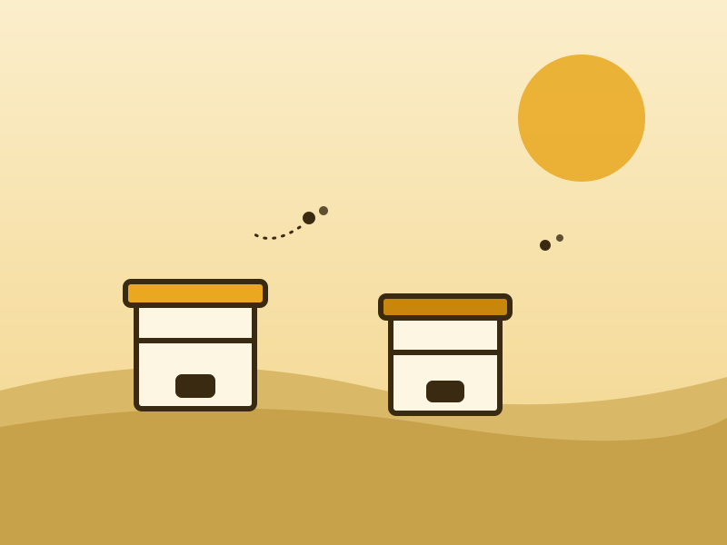
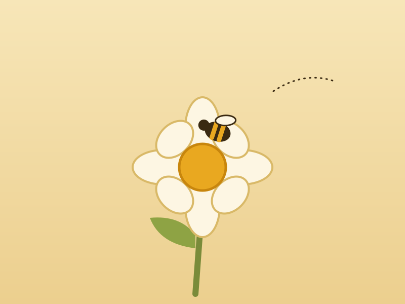
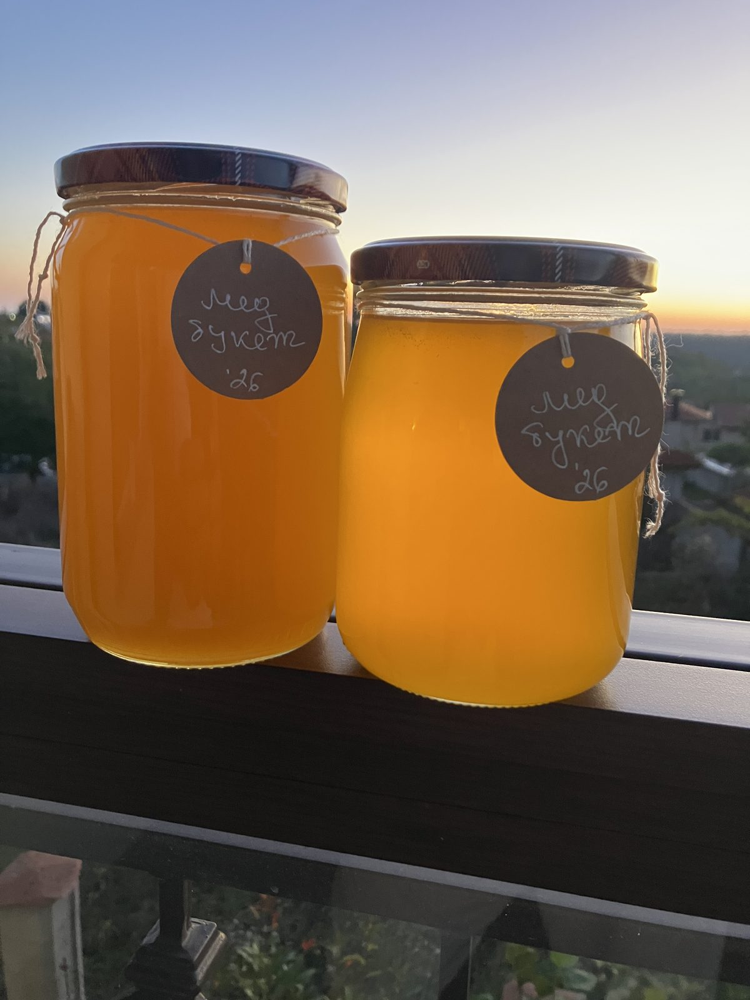
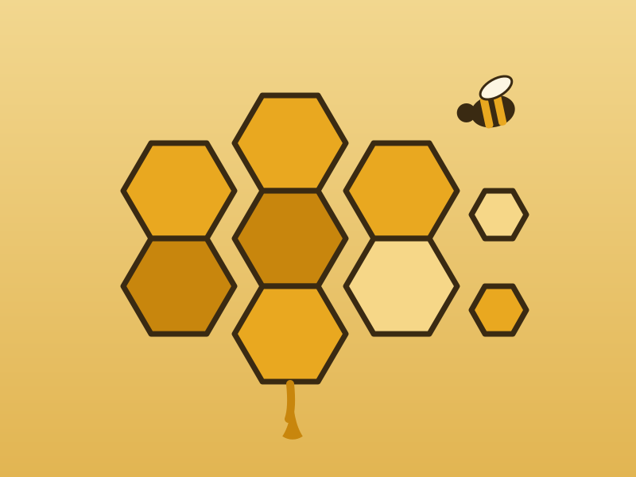
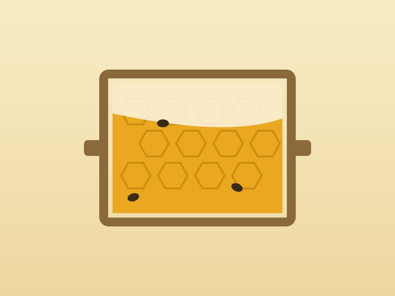
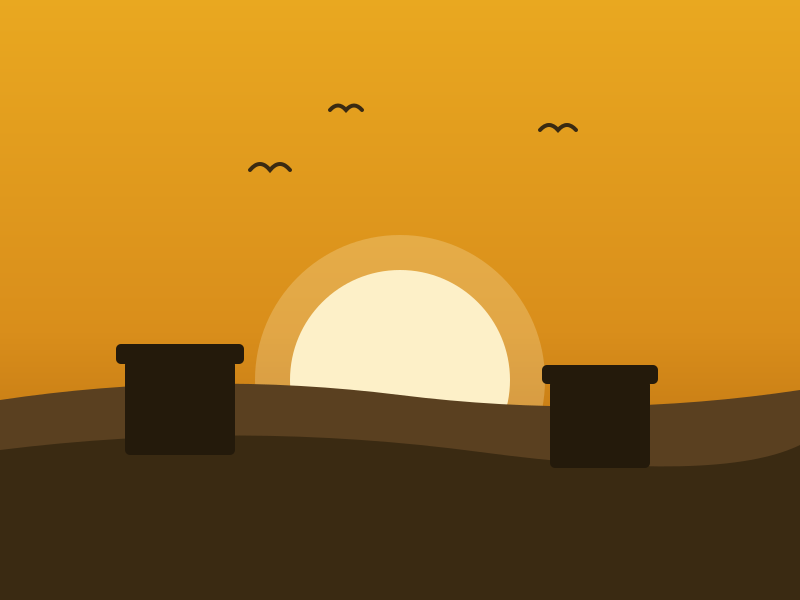

Природата
Пчелините ни са далеч от натоварени пътища и интензивно земеделие — сред диви поляни и широколистни гори.
с. Кичево · Варненско
Чист, суров и непреработен мед — създаден от пчелите и отгледан с грижа от нашето семейство сред полята и горите край Кичево.
За нас
„Три слънца“ е малка семейна пчелна ферма в с. Кичево, само на няколко километра от Варна. Започнахме с няколко кошера в двора на дядовата къща, а днес пчелите ни са част от ежедневието и гордостта на цялото семейство.
Вярваме, че добрият мед не се прави — той се отглежда. Затова не пришпорваме природата: ваденето на меда става само когато питите са запечатани, не прегряваме и не филтрираме агресивно, а всеки буркан носи вкуса на сезона, в който е събран.
Името ни идва от трите слънца, които греят във всичко, което правим — природата, традицията и семейството.
Пчелините ни са далеч от натоварени пътища и интензивно земеделие — сред диви поляни и широколистни гори.
Работим по изпитани от поколения пчеларски практики, съчетани със съвременна грижа за здравето на пчелите.
Всеки буркан минава през нашите ръце — от рамката в кошера до етикета. Зад меда ни стои името ни.
Пчелинът

Основният ни пчелин е разположен в землището на с. Кичево — район с мека морска климатична зона, обграден от акациеви и липови масиви, диви ливади и слънчогледови полета. Това многообразие дава на пчелите ни богата и чиста паша от ранна пролет до късна есен.
Кошерите преглеждаме редовно, работим щадящо и оставяме на всяко семейство достатъчно собствен мед за зимата. Здравите и спокойни пчели са първата съставка на добрия мед.
Нашият мед
полифлорен
Богат, плътен вкус от диви билки и цветя. Любимецът на нашите клиенти — различен всяка година, както е различно всяко лято.
нежен и светъл
Деликатен аромат и светъл цвят. Кристализира много бавно и е подходящ и за най-малките ценители.
ароматен
Със свеж, характерен аромат от липовите гори край Варна. Неизменен спътник на чая в студените месеци.
златист
Слънце в буркан — наситен златист цвят и мека сладост. Кристализира бързо във фина, кремообразна текстура.
Освен мед от пчелина предлагаме още:
За наличности и цени — свържете се с нас. Изпращаме до цялата страна, а в района на Варна доставяме лично.
Снимки





Останалите илюстрации са временни — постепенно ги заменяме с истински снимки от фермата.
Контакти
с. Кичево 9166
общ. Аксаково, обл. Варна
Посещения на пчелина — след предварителна уговорка. Заповядайте!